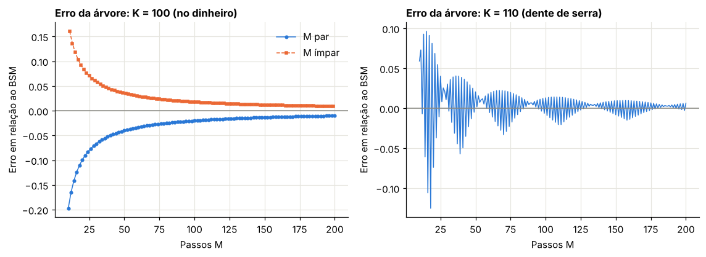
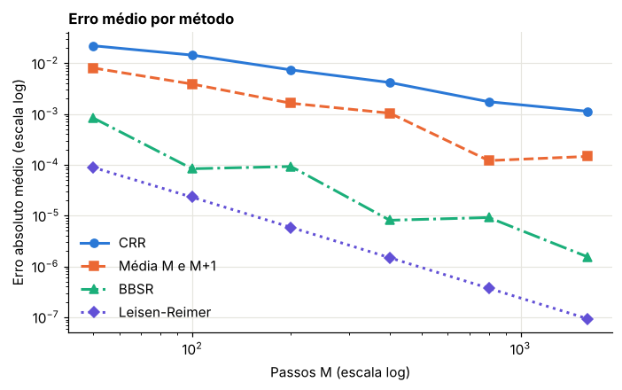
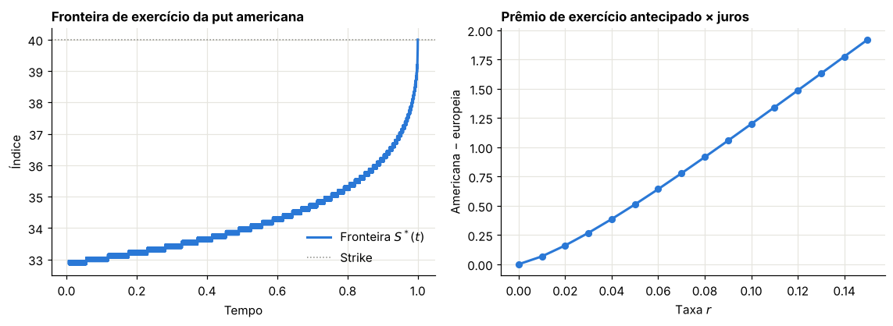
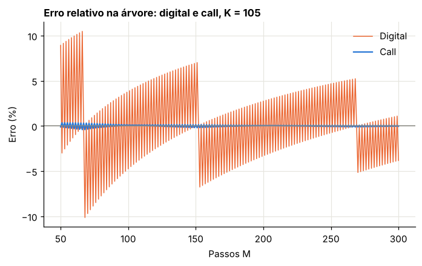

Módulo 6 — A árvore binomial de Cox-Ross-Rubinstein#
Introdução#
A árvore binomial de Cox, Ross e Rubinstein, de 1979, é a forma mais intuitiva de precificar opções: em cada período o preço do ativo só pode subir ou descer por fatores fixos, e o valor da opção é obtido de trás para a frente, nó a nó, com as probabilidades neutras ao risco do Capítulo 3.
Com os fatores de alta e baixa escolhidos para reproduzir a volatilidade, a árvore converge para Black-Scholes quando o número de passos cresce, e isso a torna uma ponte didática entre o modelo discreto e o contínuo. Mas sua vantagem prática é outra: ela lida naturalmente com o exercício antecipado. Em cada nó, compara-se o valor de continuar com o valor de exercer agora, e fica-se com o maior. É assim que se precificam opções americanas, que podem ser exercidas a qualquer momento até o vencimento.
O capítulo implementa a árvore, estuda sua convergência (inclusive as oscilações típicas do erro), extrai gregas e mostra a fronteira de exercício de uma put americana.
Curso: Derivativos com Python, a partir de Derivatives Analytics with Python (Y. Hilpisch, Wiley, 2015). Este módulo cobre: seção 5.4 e o Apêndice A.2.2 do livro.
O que você vai conseguir fazer ao final#
Calibrar uma árvore por moment matching, e ver surgir o termo \(-\tfrac12\sigma^2\).
Implementar a árvore de três formas e entender as diferenças de custo.
Mostrar que a árvore converge para a fórmula de BSM.
Explicar as oscilações do erro, e reduzi-las.
Extrair gregas da árvore sem reprecificar.
Precificar opções americanas e encontrar a fronteira de exercício.
Reconhecer a árvore como um método de diferenças finitas.
Onde estamos#
No Módulo 3, construímos árvores que não recombinam, com \(2^M\) estados. Isso permite qualquer produto dependente da trajetória, mas fica inviável rapidamente. A árvore CRR faz \(u \cdot d = 1\) para que os caminhos se reencontrem: são apenas \(M+1\) nós na data final.
0. Preparação#
from time import perf_counter
import numpy as np
import pandas as pd
import matplotlib.pyplot as plt
from scipy.stats import norm, binom
from IPython.display import display
AZUL, LARANJA, VERDE, CINZA = "#2a78d6", "#eb6834", "#1baf7a", "#8a8a84"
plt.rcParams.update({
"figure.figsize": (7.2, 4.0), "figure.dpi": 110,
"axes.spines.top": False, "axes.spines.right": False,
"axes.grid": True, "grid.color": "#e6e5df", "grid.linewidth": 0.8,
"axes.axisbelow": True, "axes.titlesize": 11, "axes.titleweight": "bold",
"axes.titlelocation": "left", "lines.linewidth": 2.0, "legend.frameon": False,
"font.size": 10,
})
def f3(x):
"""Formata com três casas decimais no padrão brasileiro."""
return f"{x:,.3f}".replace(",", "§").replace(".", ",").replace("§", ".")
def tabela(df):
"""Exibe um DataFrame com os números reais em três casas decimais."""
def fmt(v):
if isinstance(v, (float, np.floating)):
return "n/d" if np.isnan(v) else f3(v)
return v
display(df.map(fmt))
_checks = {"n": 0}
def ok(condicao, mensagem):
"""Verificação do laboratório: interrompe o notebook se a conta não fechar."""
assert bool(condicao), f"FALHOU: {mensagem}"
_checks["n"] += 1
print(f"OK — {mensagem}")
def d12(S, K, tau, r, sig):
d1 = (np.log(S / K) + (r + 0.5 * sig**2) * tau) / (sig * np.sqrt(tau))
return d1, d1 - sig * np.sqrt(tau)
def bsm(S, K, tau, r, sig, tipo="call"):
d1, d2 = d12(S, K, tau, r, sig)
if tipo == "call":
return S * norm.cdf(d1) - K * np.exp(-r * tau) * norm.cdf(d2)
return K * np.exp(-r * tau) * norm.cdf(-d2) - S * norm.cdf(-d1)
S0, K0, T0, r0, s0 = 100.0, 100.0, 1.0, 0.05, 0.20
C_BSM = float(bsm(S0, K0, T0, r0, s0))
print("Ambiente pronto. Call BSM de referência:", f3(C_BSM))
Ambiente pronto. Call BSM de referência: 10,451
1. O modelo e sua calibração#
Livro: §5.4
1.1 A estrutura#
Dividimos \([0, T]\) em \(M\) intervalos de \(\Delta t = T/M\). Em cada passo, o índice é multiplicado por \(u\) (alta) ou \(d\) (queda). Sob \(Q\), a probabilidade de alta é \(q\). Como no Módulo 3, a condição de martingale do índice descontado fixa \(q\):
1.2 Como escolher \(u\) e \(d\)#
Queremos que a árvore tenha, em cada passo, a volatilidade certa. CRR escolhe
Vejamos por que isso funciona, usando log-retornos. O log-retorno do passo vale \(\pm a\), com \(a = \sigma\sqrt{\Delta t}\).
Variância do passo:
Expansão de \(q\). Com Taylor, \(u = 1 + a + \tfrac{a^2}{2} + \dots\), \(d = 1 - a + \tfrac{a^2}{2} - \dots\) e \(e^{r\Delta t} = 1 + r\Delta t + \dots\):
Consequências. Com \(q \to \tfrac12\), a variância tende a \(4a^2\cdot\tfrac14 = \sigma^2\Delta t\). E a média do log-retorno é
O termo \(-\tfrac12\sigma^2\) reaparece sem que ninguém o tenha colocado: vem apenas da condição de martingale, a mesma lógica de Itô.
1.3 Condição de não arbitragem#
Precisamos de \(0 < q < 1\), ou seja, \(d < e^{r\Delta t} < u\). Com \(u = e^{\sigma\sqrt{\Delta t}}\), isso exige \(|r|\sqrt{\Delta t} < \sigma\):
Em juros altos e volatilidade baixa, uma árvore grosseira pode ter arbitragem, e essa condição não é detalhe: num cenário de 13% ao ano com volatilidade de 5%, são necessários mais de 6 passos para cada ano.
Laboratório 1.1 — Reproduzindo a Tabela 5.1 do livro#
def params_crr(T, r, sig, M):
dt = T / M
u = np.exp(sig * np.sqrt(dt))
d = 1 / u
q = (np.exp(r * dt) - d) / (u - d)
return dt, u, d, q
def arvore_completa(S0, K, T, r, sig, M):
"""Devolve as matrizes de índice e de valor, para inspeção de árvores pequenas."""
dt, u, d, q = params_crr(T, r, sig, M)
S = np.full((M + 1, M + 1), np.nan)
V = np.full((M + 1, M + 1), np.nan)
for t in range(M + 1):
for j in range(t + 1):
S[j, t] = S0 * u ** (t - j) * d**j
V[:, M] = np.maximum(S[:, M] - K, 0)
desc = np.exp(-r * dt)
for t in range(M - 1, -1, -1):
for j in range(t + 1):
V[j, t] = desc * (q * V[j, t + 1] + (1 - q) * V[j + 1, t + 1])
return S, V, q
Sa, Va, q4 = arvore_completa(S0, K0, T0, r0, s0, 4)
rot = ["t=0", "Δt", "2Δt", "3Δt", "T"]
print("Índice:")
tabela(pd.DataFrame(Sa, columns=rot))
print("Call:")
tabela(pd.DataFrame(Va, columns=rot))
print("q =", f3(float(q4)))
ok(abs(q4 - 0.5378) < 5e-4, "q coincide com o livro")
ok(abs(Va[0, 0] - 9.97) < 0.005 and abs(Va[0, 3] - 36.23) < 0.005 and abs(Sa[0, 4] - 149.18) < 0.005, "valores coincidem com a Tabela 5.1")
linhas = []
for M in [4, 16, 64, 256, 1024]:
dt, u, d, q = params_crr(T0, r0, s0, M)
a = s0 * np.sqrt(dt)
linhas.append({"M": M, "q": float(q), "Média do log-passo (×M)": float((2 * q - 1) * a * M), "Teoria (r−σ²/2)T": (r0 - 0.5 * s0**2) * T0, "Variância do log-passo (×M)": float(4 * a**2 * q * (1 - q) * M), "Teoria σ²T": s0**2 * T0})
mom = pd.DataFrame(linhas)
tabela(mom)
ok(abs(mom["Média do log-passo (×M)"].iloc[-1] - mom["Teoria (r−σ²/2)T"].iloc[-1]) < 1e-3, "o drift converge para r − σ²/2")
ok(abs(mom["Variância do log-passo (×M)"].iloc[-1] - s0**2 * T0) < 1e-3, "a variância converge para σ²T")
_, _, _, q_mau = params_crr(1.0, 0.13, 0.05, 4)
_, _, _, q_bom = params_crr(1.0, 0.13, 0.05, 12)
print("r=13%, σ=5%: q com M=4:", f3(float(q_mau)), "| com M=12:", f3(float(q_bom)))
ok(q_mau > 1 and 0 < q_bom < 1, "árvores grosseiras podem violar a condição de não arbitragem")
Índice:
| t=0 | Δt | 2Δt | 3Δt | T | |
|---|---|---|---|---|---|
| 0 | 100,000 | 110,517 | 122,140 | 134,986 | 149,182 |
| 1 | n/d | 90,484 | 100,000 | 110,517 | 122,140 |
| 2 | n/d | n/d | 81,873 | 90,484 | 100,000 |
| 3 | n/d | n/d | n/d | 74,082 | 81,873 |
| 4 | n/d | n/d | n/d | n/d | 67,032 |
Call:
| t=0 | Δt | 2Δt | 3Δt | T | |
|---|---|---|---|---|---|
| 0 | 9,971 | 15,922 | 24,609 | 36,228 | 49,182 |
| 1 | n/d | 3,317 | 6,246 | 11,759 | 22,140 |
| 2 | n/d | n/d | 0,000 | 0,000 | 0,000 |
| 3 | n/d | n/d | n/d | 0,000 | 0,000 |
| 4 | n/d | n/d | n/d | n/d | 0,000 |
q = 0,538
OK — q coincide com o livro
OK — valores coincidem com a Tabela 5.1
| M | q | Média do log-passo (×M) | Teoria (r−σ²/2)T | Variância do log-passo (×M) | Teoria σ²T | |
|---|---|---|---|---|---|---|
| 0 | 4 | 0,538 | 0,030 | 0,030 | 0,040 | 0,040 |
| 1 | 16 | 0,519 | 0,030 | 0,030 | 0,040 | 0,040 |
| 2 | 64 | 0,509 | 0,030 | 0,030 | 0,040 | 0,040 |
| 3 | 256 | 0,505 | 0,030 | 0,030 | 0,040 | 0,040 |
| 4 | 1024 | 0,502 | 0,030 | 0,030 | 0,040 | 0,040 |
OK — o drift converge para r − σ²/2
OK — a variância converge para σ²T
r=13%, σ=5%: q com M=4: 1,154 | com M=12: 0,874
OK — árvores grosseiras podem violar a condição de não arbitragem
Errata do livro: a nota da Tabela 5.1 diz “the true value of the European put option is 10.45”. A tabela é da call; a put vale 5,574.
2. Três implementações#
Livro: Apêndice A.2.2
Há três formas equivalentes de obter o mesmo número, com custos bem diferentes.
A. Laços duplos. A forma literal do algoritmo. Custo de \(M^2/2\) operações em Python puro.
B. Vetorizada. A cada passo para trás, uma única operação sobre o vetor de valores:
Mesmo custo teórico, mas em C. Só é preciso guardar a última coluna: memória \(O(M)\).
C. Soma binomial fechada. Para payoffs que só dependem de \(S_T\), a árvore tem solução direta. O nó com \(j\) altas tem probabilidade binomial:
Custo \(O(M)\). Não serve para americanas, nem para produtos dependentes da trajetória.
2.1 Fechando a conta#
Seja \(a\) o menor \(j\) com \(S_0u^jd^{M-j} > K\). Separando o payoff em dois termos, como no Módulo 5:
em que \(\mathcal{B}\) é a cauda superior da binomial. \(q'\) é a probabilidade de alta sob a medida em que o índice é o numerário, assim como \(N(d_1)\). Pelo teorema central do limite, \(\mathcal{B}(a; M, q) \to N(d_2)\) e \(\mathcal{B}(a; M, q') \to N(d_1)\). Logo, a árvore tende à fórmula de BSM.
Laboratório 2.1 — Corrida de implementações#
def crr_laco(S0, K, T, r, sig, M):
dt, u, d, q = params_crr(T, r, sig, M)
desc = np.exp(-r * dt)
V = [max(S0 * u**j * d ** (M - j) - K, 0.0) for j in range(M + 1)]
for t in range(M - 1, -1, -1):
for j in range(t + 1):
V[j] = desc * (q * V[j + 1] + (1 - q) * V[j])
return V[0]
def crr_vetor(S0, K, T, r, sig, M):
dt, u, d, q = params_crr(T, r, sig, M)
desc = np.exp(-r * dt)
j = np.arange(M + 1)
V = np.maximum(S0 * u**j * d ** (M - j) - K, 0.0)
for _ in range(M):
V = desc * (q * V[1:] + (1 - q) * V[:-1])
return float(V[0])
def crr_fechada(S0, K, T, r, sig, M):
dt, u, d, q = params_crr(T, r, sig, M)
a = int(np.floor(np.log(K / (S0 * d**M)) / np.log(u / d))) + 1
a = min(max(a, 0), M + 1)
q_ = q * u * np.exp(-r * dt)
return float(S0 * binom.sf(a - 1, M, q_) - K * np.exp(-r * T) * binom.sf(a - 1, M, q))
linhas = []
for M in [100, 500, 2000]:
regs = {}
for nome, f in [("Laços", crr_laco), ("Vetorizada", crr_vetor), ("Fechada", crr_fechada)]:
t0 = perf_counter()
v = f(S0, K0, T0, r0, s0, M)
regs[nome] = (v, (perf_counter() - t0) * 1000)
linhas.append({"M": M, "Valor": regs["Fechada"][0], "Laços (ms)": regs["Laços"][1], "Vetorizada (ms)": regs["Vetorizada"][1], "Fechada (ms)": regs["Fechada"][1]})
ok(abs(regs["Laços"][0] - regs["Vetorizada"][0]) < 1e-9 and abs(regs["Fechada"][0] - regs["Vetorizada"][0]) < 1e-8, f"as três implementações coincidem para M = {M}")
corrida = pd.DataFrame(linhas)
tabela(corrida)
ok(corrida["Vetorizada (ms)"].iloc[-1] < corrida["Laços (ms)"].iloc[-1], "a vetorização é mais rápida que os laços")
d1, d2 = d12(S0, K0, T0, r0, s0)
linhas = []
for M in [10, 100, 1000, 10000]:
dt, u, d, q = params_crr(T0, r0, s0, M)
a = int(np.floor(np.log(K0 / (S0 * d**M)) / np.log(u / d))) + 1
linhas.append({"M": M, "Cauda sob q": float(binom.sf(a - 1, M, q)), "N(d2)": float(norm.cdf(d2)), "Cauda sob q'": float(binom.sf(a - 1, M, q * u * np.exp(-r0 * dt))), "N(d1)": float(norm.cdf(d1))})
cau = pd.DataFrame(linhas)
tabela(cau)
ok(abs(cau["Cauda sob q"].iloc[-1] - norm.cdf(d2)) < 0.005 and abs(cau["Cauda sob q'"].iloc[-1] - norm.cdf(d1)) < 0.005, "as caudas binomiais convergem para N(d2) e N(d1)")
OK — as três implementações coincidem para M = 100
OK — as três implementações coincidem para M = 500
OK — as três implementações coincidem para M = 2000
| M | Valor | Laços (ms) | Vetorizada (ms) | Fechada (ms) | |
|---|---|---|---|---|---|
| 0 | 100 | 10,431 | 1,233 | 0,368 | 0,307 |
| 1 | 500 | 10,447 | 24,746 | 1,246 | 0,218 |
| 2 | 2000 | 10,450 | 419,164 | 6,405 | 0,280 |
OK — a vetorização é mais rápida que os laços
| M | Cauda sob q | N(d2) | Cauda sob q' | N(d1) | |
|---|---|---|---|---|---|
| 0 | 10 | 0,437 | 0,560 | 0,518 | 0,637 |
| 1 | 100 | 0,599 | 0,560 | 0,674 | 0,637 |
| 2 | 1000 | 0,547 | 0,560 | 0,625 | 0,637 |
| 3 | 10000 | 0,564 | 0,560 | 0,641 | 0,637 |
OK — as caudas binomiais convergem para N(d2) e N(d1)
3. Convergência e seus padrões#
Livro: §5.4 e Figuras 5.8 e 5.9
3.1 Por que o erro oscila#
O valor da árvore é uma soma sobre nós. Se \(K\) cair sobre um nó ou entre dois, o resultado muda. Variar \(M\) desloca os nós em relação a \(K\), e o erro oscila.
Com \(K = S_0\), um nó central só existe se \(M\) for par. Com \(M\) ímpar, \(K\) cai no meio de dois nós.
É isso que aparece nas figuras do livro: usando passos de 20 em 20, todo \(M\) é par e o valor parece vir por baixo. Com passos de 25 em 25, \(M\) alterna entre par e ímpar e o valor oscila.
Sobre o texto do livro. Ele atribui a oscilação a uma “parametrização numérica diferente”. Não há outra parametrização: é o mesmo modelo, e a diferença é apenas a paridade de \(M\) em relação à posição do strike.
Para \(K\) fora do dinheiro, o padrão é mais complicado, com um dente de serra irregular.
3.2 Três melhorias#
Média de dois vizinhos. Com \(M\) e \(M+1\), os erros têm sinais opostos no ATM, e a média cancela boa parte.
Suavização e Richardson (BBSR). O payoff tem quina, e é ela que causa as oscilações. Broadie e Detemple propõem trocar o último passo pelo valor BSM em \(\Delta t\). A quina desaparece e o erro fica liso, o que permite a extrapolação de Richardson. Se o erro é \(c/M\):
Leisen-Reimer. Em vez de casar momentos, escolhe-se \(q\) e \(q'\) de modo que as caudas binomiais aproximem \(N(d_2)\) e \(N(d_1)\) diretamente, pela inversão de Peizer-Pratt, com \(M\) ímpar:
com \(q = h(d_2)\), \(q' = h(d_1)\), \(u = e^{r\Delta t}q'/q\) e \(d = (e^{r\Delta t} - qu)/(1 - q)\).
Laboratório 3.1 — O padrão do erro#
Ms = np.arange(10, 201)
err_atm = np.array([crr_fechada(S0, 100.0, T0, r0, s0, int(M)) for M in Ms]) - float(bsm(S0, 100.0, T0, r0, s0))
err_otm = np.array([crr_fechada(S0, 110.0, T0, r0, s0, int(M)) for M in Ms]) - float(bsm(S0, 110.0, T0, r0, s0))
fig, (a1, a2) = plt.subplots(1, 2, figsize=(10.5, 3.9))
a1.plot(Ms[Ms % 2 == 0], err_atm[Ms % 2 == 0], color=AZUL, marker="o", markersize=3, lw=1, label="M par")
a1.plot(Ms[Ms % 2 == 1], err_atm[Ms % 2 == 1], color=LARANJA, marker="s", markersize=3, lw=1, ls="--", label="M ímpar")
a1.axhline(0, color=CINZA, lw=1)
a1.set_title("Erro da árvore: K = 100 (no dinheiro)")
a1.set_xlabel("Passos M")
a1.set_ylabel("Erro em relação ao BSM")
a1.legend()
a2.plot(Ms, err_otm, color=AZUL, lw=1)
a2.axhline(0, color=CINZA, lw=1)
a2.set_title("Erro da árvore: K = 110 (dente de serra)")
a2.set_xlabel("Passos M")
a2.set_ylabel("Erro em relação ao BSM")
plt.tight_layout()
plt.show()
ok(np.all(err_atm[Ms % 2 == 0] < 0), "com M par e K no dinheiro, a árvore fica abaixo do BSM")
ok(np.all(err_atm[Ms % 2 == 1] > 0), "com M ímpar e K no dinheiro, a árvore fica acima do BSM")
trocas = int(np.sum(np.diff(np.sign(err_otm)) != 0))
print("Trocas de sinal do erro para K = 110:", trocas)
ok(trocas > 5, "fora do dinheiro, o erro troca de sinal irregularmente")

OK — com M par e K no dinheiro, a árvore fica abaixo do BSM
OK — com M ímpar e K no dinheiro, a árvore fica acima do BSM
Trocas de sinal do erro para K = 110: 140
OK — fora do dinheiro, o erro troca de sinal irregularmente
Laboratório 3.2 — Comparando os métodos#
def recursao(V, u, d, q, dt, r, M):
desc = np.exp(-r * dt)
for _ in range(M):
V = desc * (q * V[1:] + (1 - q) * V[:-1])
return float(V[0])
def bbs(S0, K, T, r, sig, M):
"""Árvore com o último passo substituído pelo valor BSM."""
dt, u, d, q = params_crr(T, r, sig, M)
j = np.arange(M)
S = S0 * u**j * d ** (M - 1 - j)
return recursao(bsm(S, K, dt, r, sig), u, d, q, dt, r, M - 1)
def bbsr(S0, K, T, r, sig, M):
return 2 * bbs(S0, K, T, r, sig, M) - bbs(S0, K, T, r, sig, M // 2)
def leisen_reimer(S0, K, T, r, sig, M):
M = M + 1 if M % 2 == 0 else M
dt = T / M
d1, d2 = d12(S0, K, T, r, sig)
def h(z):
return 0.5 + np.sign(z) * 0.5 * np.sqrt(1 - np.exp(-((z / (M + 1 / 3 + 0.1 / (M + 1))) ** 2) * (M + 1 / 6)))
q, q_ = h(d2), h(d1)
u = np.exp(r * dt) * q_ / q
d = (np.exp(r * dt) - q * u) / (1 - q)
j = np.arange(M + 1)
return recursao(np.maximum(S0 * u**j * d ** (M - j) - K, 0.0), u, d, q, dt, r, M)
def media_viz(S0, K, T, r, sig, M):
return 0.5 * (crr_fechada(S0, K, T, r, sig, M) + crr_fechada(S0, K, T, r, sig, M + 1))
metodos = {"CRR": crr_fechada, "Média M e M+1": media_viz, "BBSR": bbsr, "Leisen-Reimer": leisen_reimer}
linhas = []
grade_M = [50, 100, 200, 400, 800, 1600]
for K_ in [90.0, 100.0, 115.0]:
ref = float(bsm(S0, K_, T0, r0, s0))
for nome, f in metodos.items():
for M in grade_M:
linhas.append({"Strike": K_, "Método": nome, "M": M, "Erro": abs(f(S0, K_, T0, r0, s0, M) - ref)})
er = pd.DataFrame(linhas)
media_err = er.groupby(["Método", "M"])["Erro"].mean().unstack(0)[list(metodos)]
print("Erro absoluto médio em 3 strikes (×1000):")
tabela((media_err * 1000).reset_index())
fig, ax = plt.subplots()
for (nome, cor, est, mark) in [("CRR", AZUL, "-", "o"), ("Média M e M+1", LARANJA, "--", "s"), ("BBSR", VERDE, "-.", "^"), ("Leisen-Reimer", "#6250d6", ":", "D")]:
ax.loglog(media_err.index, media_err[nome], color=cor, ls=est, marker=mark, markersize=6, label=nome)
ax.set_title("Erro médio por método")
ax.set_xlabel("Passos M (escala log)")
ax.set_ylabel("Erro absoluto médio (escala log)")
ax.legend()
plt.show()
ultimo = media_err.iloc[-1]
ok(ultimo["Leisen-Reimer"] < ultimo["CRR"] / 100, "Leisen-Reimer reduz o erro em pelo menos duas ordens de grandeza")
ok(ultimo["BBSR"] < ultimo["CRR"] / 20, "BBSR reduz bastante o erro")
Erro absoluto médio em 3 strikes (×1000):
| Método | M | CRR | Média M e M+1 | BBSR | Leisen-Reimer |
|---|---|---|---|---|---|
| 0 | 50 | 22,036 | 8,053 | 0,837 | 0,089 |
| 1 | 100 | 14,439 | 3,888 | 0,084 | 0,023 |
| 2 | 200 | 7,380 | 1,628 | 0,093 | 0,006 |
| 3 | 400 | 4,165 | 1,038 | 0,008 | 0,001 |
| 4 | 800 | 1,745 | 0,121 | 0,009 | 0,000 |
| 5 | 1600 | 1,130 | 0,146 | 0,002 | 0,000 |

OK — Leisen-Reimer reduz o erro em pelo menos duas ordens de grandeza
OK — BBSR reduz bastante o erro
4. Gregas a partir da árvore#
Uma das vantagens da árvore: os nós das primeiras datas já contêm a informação das sensibilidades, sem reprecificar.
Delta, com os dois nós de \(\Delta t\):
Gama, com os três nós de \(2\Delta t\), como variação do delta:
Teta: como \(ud = 1\), o nó central de \(2\Delta t\) tem o mesmo índice que a raiz:
Laboratório 4.1 — Gregas da árvore#
def arvore_gregas(S0, K, T, r, sig, M, tipo="call", americana=False):
"""Árvore vetorizada que devolve o valor, as gregas e a fronteira de exercício (para put)."""
dt, u, d, q = params_crr(T, r, sig, M)
desc = np.exp(-r * dt)
sinal = 1.0 if tipo == "call" else -1.0
j = np.arange(M + 1)
V = np.maximum(sinal * (S0 * u**j * d ** (M - j) - K), 0.0)
guardados, fronteira = {}, np.full(M + 1, np.nan)
fronteira[M] = K
for t in range(M - 1, -1, -1):
V = desc * (q * V[1:] + (1 - q) * V[:-1])
if americana:
j = np.arange(t + 1)
St = S0 * u**j * d ** (t - j)
intr = np.maximum(sinal * (St - K), 0.0)
exerce = intr > V + 1e-12
V = np.where(exerce, intr, V)
if tipo == "put" and exerce.any():
fronteira[t] = St[exerce].max()
if t <= 2:
guardados[t] = V.copy()
V0 = float(guardados[0][0])
Vd, Vu = guardados[1]
Vdd, Vud, Vuu = guardados[2]
delta = (Vu - Vd) / (S0 * (u - d))
Suu, Sud, Sdd = S0 * u**2, S0, S0 * d**2
gama = ((Vuu - Vud) / (Suu - Sud) - (Vud - Vdd) / (Sud - Sdd)) / (0.5 * (Suu - Sdd))
teta = (Vud - V0) / (2 * dt)
return {"valor": V0, "delta": delta, "gama": gama, "teta": teta, "fronteira": fronteira}
g = arvore_gregas(S0, K0, T0, r0, s0, 2000)
d1, d2 = d12(S0, K0, T0, r0, s0)
exato = {
"delta": float(norm.cdf(d1)),
"gama": float(norm.pdf(d1) / (S0 * s0 * np.sqrt(T0))),
"teta": float(-S0 * norm.pdf(d1) * s0 / (2 * np.sqrt(T0)) - r0 * K0 * np.exp(-r0 * T0) * norm.cdf(d2)),
}
tabela(pd.DataFrame([{"Grega": k, "Árvore (M=2000)": float(g[k]), "BSM": v} for k, v in exato.items()]))
ok(abs(g["delta"] - exato["delta"]) < 2e-3, "delta da árvore")
ok(abs(g["gama"] - exato["gama"]) < 1e-3, "gama da árvore")
ok(abs(g["teta"] - exato["teta"]) < 0.02, "teta da árvore")
| Grega | Árvore (M=2000) | BSM | |
|---|---|---|---|
| 0 | delta | 0,637 | 0,637 |
| 1 | gama | 0,019 | 0,019 |
| 2 | teta | -6,416 | -6,414 |
OK — delta da árvore
OK — gama da árvore
OK — teta da árvore
5. Opções americanas#
Livro: §5.4; o Módulo 9 aprofunda com simulação
Agora vem a principal vantagem prática. Em cada nó, o titular de uma opção americana escolhe o melhor entre exercer e continuar:
É a programação dinâmica. Bastou acrescentar um max à recursão.
5.1 Call americana sem dividendos#
Do Módulo 1: uma call europeia vale pelo menos \(S - Ke^{-r\tau}\). Com \(r > 0\), isso é maior que o valor de exercício \(S - K\). Logo, nunca compensa exercer antes: vivo vale mais que morto. Portanto, call americana sem dividendos é igual à europeia.
5.2 Put americana#
Para a put o argumento se inverte. Se a put estiver muito dentro do dinheiro, o titular prefere receber \(K\) já e aplicar. Existe uma fronteira de exercício \(S^*(t)\): abaixo dela, o exercício é ótimo. Com \(r = 0\), não há esse incentivo, e a put americana é igual à europeia.
Laboratório 5.1 — Put americana#
Usamos os parâmetros do exemplo clássico de Longstaff e Schwartz: \(S_0 = 36\), \(K = 40\), \(T = 1\), \(r = 6\%\), \(\sigma = 20\%\).
S_a, K_a, T_a, r_a, s_a = 36.0, 40.0, 1.0, 0.06, 0.20
linhas = []
for M in [50, 100, 500, 1000, 2000, 4000]:
am = arvore_gregas(S_a, K_a, T_a, r_a, s_a, M, "put", True)["valor"]
eu = arvore_gregas(S_a, K_a, T_a, r_a, s_a, M, "put", False)["valor"]
linhas.append({"M": M, "Americana": am, "Europeia": eu, "Prêmio de exercício": am - eu})
tb = pd.DataFrame(linhas)
tabela(tb)
print("BSM europeia:", f3(float(bsm(S_a, K_a, T_a, r_a, s_a, "put"))))
ok(abs(tb["Americana"].iloc[-1] - tb["Americana"].iloc[-2]) < 1e-3, "o valor americano converge")
ok((tb["Americana"] > tb["Europeia"]).all(), "a put americana vale mais que a europeia")
call_am = arvore_gregas(100.0, 100.0, 1.0, 0.05, 0.2, 500, "call", True)["valor"]
call_eu = arvore_gregas(100.0, 100.0, 1.0, 0.05, 0.2, 500, "call", False)["valor"]
ok(abs(call_am - call_eu) < 1e-9, "call americana sem dividendos é igual à europeia")
p_am0 = arvore_gregas(S_a, K_a, T_a, 0.0, s_a, 500, "put", True)["valor"]
p_eu0 = arvore_gregas(S_a, K_a, T_a, 0.0, s_a, 500, "put", False)["valor"]
ok(abs(p_am0 - p_eu0) < 1e-9, "com juros zero, a put americana é igual à europeia")
M_f = 4000
res_f = arvore_gregas(S_a, K_a, T_a, r_a, s_a, M_f, "put", True)
ts = np.arange(M_f + 1) * T_a / M_f
fr = pd.Series(res_f["fronteira"]).ffill().values
premio = []
grade_r = np.linspace(0.0, 0.15, 16)
for r_ in grade_r:
premio.append(arvore_gregas(S_a, K_a, T_a, float(r_), s_a, 800, "put", True)["valor"] - arvore_gregas(S_a, K_a, T_a, float(r_), s_a, 800, "put", False)["valor"])
fig, (a1, a2) = plt.subplots(1, 2, figsize=(10.5, 3.9))
a1.plot(ts[5:], fr[5:], color=AZUL, label="Fronteira $S^*(t)$")
a1.axhline(K_a, color=CINZA, lw=1, ls=":", label="Strike")
a1.set_title("Fronteira de exercício da put americana")
a1.set_xlabel("Tempo")
a1.set_ylabel("Índice")
a1.legend()
a2.plot(grade_r, premio, color=AZUL, marker="o", markersize=5)
a2.set_title("Prêmio de exercício antecipado × juros")
a2.set_xlabel("Taxa $r$")
a2.set_ylabel("Americana − europeia")
plt.tight_layout()
plt.show()
ok(fr[int(0.9 * M_f)] > fr[int(0.1 * M_f)] and fr[-2] < K_a + 1e-9, "a fronteira sobe com o tempo e termina perto do strike")
ok(np.all(np.diff(premio) > 0), "o prêmio de exercício cresce com os juros")
| M | Americana | Europeia | Prêmio de exercício | |
|---|---|---|---|---|
| 0 | 50 | 4,484 | 3,840 | 0,645 |
| 1 | 100 | 4,488 | 3,848 | 0,640 |
| 2 | 500 | 4,486 | 3,844 | 0,643 |
| 3 | 1000 | 4,487 | 3,845 | 0,642 |
| 4 | 2000 | 4,487 | 3,844 | 0,642 |
| 5 | 4000 | 4,487 | 3,844 | 0,642 |
BSM europeia: 3,844
OK — o valor americano converge
OK — a put americana vale mais que a europeia
OK — call americana sem dividendos é igual à europeia
OK — com juros zero, a put americana é igual à europeia

OK — a fronteira sobe com o tempo e termina perto do strike
OK — o prêmio de exercício cresce com os juros
Laboratório 5.2 — Exercício apenas em algumas datas (bermudana)#
Uma opção bermudana só pode ser exercida em datas específicas. É o que um algoritmo de simulação como o do Módulo 9 realmente precifica, com um número finito de datas de exercício. Vale a pena ter uma noção do efeito.
def bermudana(S0, K, T, r, sig, M, datas):
"""Put que só pode ser exercida em 'datas' datas igualmente espaçadas."""
dt, u, d, q = params_crr(T, r, sig, M)
desc = np.exp(-r * dt)
j = np.arange(M + 1)
V = np.maximum(K - S0 * u**j * d ** (M - j), 0.0)
passo = M // datas
for t in range(M - 1, -1, -1):
V = desc * (q * V[1:] + (1 - q) * V[:-1])
if t % passo == 0 and t > 0:
j = np.arange(t + 1)
V = np.maximum(V, K - S0 * u**j * d ** (t - j))
return float(V[0])
M_b = 4800
linhas = [{"Datas de exercício": n, "Valor": bermudana(S_a, K_a, T_a, r_a, s_a, M_b, n)} for n in [1, 2, 4, 12, 50, 400, 4800]]
ber = pd.DataFrame(linhas)
tabela(ber)
ok(np.all(np.diff(ber["Valor"]) > 0), "mais datas de exercício aumentam o valor")
ok(abs(ber["Valor"].iloc[0] - float(bsm(S_a, K_a, T_a, r_a, s_a, "put"))) < 2e-3, "com uma única data, a bermudana é a europeia")
| Datas de exercício | Valor | |
|---|---|---|
| 0 | 1 | 3,844 |
| 1 | 2 | 4,199 |
| 2 | 4 | 4,362 |
| 3 | 12 | 4,450 |
| 4 | 50 | 4,478 |
| 5 | 400 | 4,486 |
| 6 | 4800 | 4,487 |
OK — mais datas de exercício aumentam o valor
OK — com uma única data, a bermudana é a europeia
Sobre a referência. O artigo de Longstaff e Schwartz trabalha com 50 datas de exercício por ano e publica 4,478 para este caso, valor que coincide com a linha de 50 datas acima. O livro usa como referência 4,486, de uma árvore de 500 passos. Essa diferença de 0,009 é o efeito das datas de exercício, e não erro de método. Lembre-se desse detalhe quando validarmos algoritmos no Módulo 9.
6. Payoffs arbitrários#
Uma árvore serve para qualquer payoff em \(T\), mas a qualidade da convergência depende do payoff. Uma digital tem salto, e não apenas quina. O teste abaixo mostra que o erro é muito maior que na call.
Laboratório 6.1 — A digital na árvore#
def payoff_tree(pay, S0, T, r, sig, M):
dt, u, d, q = params_crr(T, r, sig, M)
j = np.arange(M + 1)
return recursao(pay(S0 * u**j * d ** (M - j)), u, d, q, dt, r, M)
K_d = 105.0
ref_dig = float(np.exp(-r0 * T0) * norm.cdf(d12(S0, K_d, T0, r0, s0)[1]))
pay_d = lambda S: np.where(S > K_d, 1.0, 0.0)
ref_cal = float(bsm(S0, K_d, T0, r0, s0))
pay_c = lambda S: np.maximum(S - K_d, 0.0)
Ms2 = np.arange(50, 301)
e_d = np.array([payoff_tree(pay_d, S0, T0, r0, s0, int(M)) for M in Ms2]) - ref_dig
e_c = np.array([payoff_tree(pay_c, S0, T0, r0, s0, int(M)) for M in Ms2]) - ref_cal
fig, ax = plt.subplots()
ax.plot(Ms2, e_d / ref_dig * 100, color=LARANJA, lw=1, label="Digital")
ax.plot(Ms2, e_c / ref_cal * 100, color=AZUL, lw=1.5, label="Call")
ax.axhline(0, color=CINZA, lw=1)
ax.set_title("Erro relativo na árvore: digital e call, K = 105")
ax.set_xlabel("Passos M")
ax.set_ylabel("Erro (%)")
ax.legend()
plt.show()
print("Maior erro relativo (%): digital", f3(float(np.max(np.abs(e_d / ref_dig)) * 100)), "| call", f3(float(np.max(np.abs(e_c / ref_cal)) * 100)))
ok(np.max(np.abs(e_d / ref_dig)) > 3 * np.max(np.abs(e_c / ref_cal)), "um payoff descontínuo tem erro relativo bem maior")

Maior erro relativo (%): digital 10,481 | call 0,395
OK — um payoff descontínuo tem erro relativo bem maior
7. A árvore é um método de diferenças finitas#
Escreva a recursão CRR com \(V_j^t\) o valor no nó de log-preço \(x_j\):
Vamos expandir o lado direito em Taylor, em torno de \((x, t+\Delta t)\), com passo \(\Delta x = \sigma\sqrt{\Delta t}\):
Usando \((2q-1)\Delta x = (r - \tfrac12\sigma^2)\Delta t\) e \(\Delta x^2 = \sigma^2\Delta t\), e expandindo \(e^{-r\Delta t} \approx 1 - r\Delta t\):
Dividindo por \(\Delta t\) e tomando o limite:
É a EDP de Black-Scholes em log-preço, a mesma que resolvemos no Módulo 5. A árvore é um esquema explícito de diferenças finitas, com a escolha particular \(\Delta x^2 = \sigma^2\Delta t\), que fica no limite de estabilidade. Isso explica também a ordem de convergência \(1/M\): é a do esquema explícito no tempo.
8. Síntese#
A árvore CRR é a do Módulo 3, com \(ud = 1\) para recombinar.
O termo \(-\tfrac12\sigma^2\) surge sozinho da condição de martingale.
A soma binomial converge para BSM, e \(q'\) é o análogo discreto de \(N(d_1)\).
O erro oscila conforme a posição de \(K\) nos nós; BBSR e Leisen-Reimer eliminam quase todo o erro.
Os primeiros nós dão as gregas de graça.
Basta um
maxpara precificar americanas: call sem dividendos é igual à europeia, e a put tem fronteira de exercício.Valores de referência por simulação costumam ser bermudanos.
A árvore é um esquema explícito de diferenças finitas da EDP.
9. Notas sobre o livro neste trecho#
Local |
Comentário |
|---|---|
Nota da Tabela 5.1 |
diz “put”; a tabela é de call |
§5.4, após a Figura 5.8 |
atribui a oscilação a “parametrização diferente”; o motivo é a paridade de \(M\) em relação à posição de \(K\) |
10. Exercícios#
Exercício 1. Para \(M = 2\), com \(S_0 = K = 100\), \(T = 1\), \(r = 5\%\), \(\sigma = 20\%\), calcule à mão a call.
Solução
\(\Delta t = 0{,}500\), \(u = e^{0{,}141} = 1{,}152\), \(d = 0{,}868\), \(q = (1{,}025 - 0{,}868)/0{,}284 = 0{,}554\). Em \(T\): \(S_{uu} = 132{,}690\), payoff \(32{,}690\); os demais não pagam. Valor: \(e^{-0{,}05}\times 0{,}554^2\times 32{,}690 = 9{,}541\).
Exercício 2. Por que os nós intermediários não precisam ser guardados na versão vetorizada?
Solução
Cada coluna só depende da seguinte. Para opções americanas, os preços do nó são recalculados por fórmula em cada data, de forma que não há necessidade de manter a matriz inteira.
Exercício 3. Modifique arvore_gregas para índice que paga dividendo contínuo \(y\). Com \(y > 0\), a call americana pode ser exercida antes?
Solução
Troque \(q\) por \((e^{(r-y)\Delta t} - d)/(u - d)\). A desigualdade \(C \ge S - Ke^{-r\tau}\) vira \(C \ge Se^{-y\tau} - Ke^{-r\tau}\), que pode ser menor que \(S - K\): o exercício antecipado passa a ser possível.
Exercício 4. Calcule o número mínimo de passos para que \(q \in (0, 1)\) com \(r = 15\%\), \(\sigma = 10\%\), \(T = 2\).
Solução
\(M > r^2T/\sigma^2 = 0{,}0225 \times 2/0{,}01 = 4{,}5\). Logo, \(M \ge 5\).
Exercício 5. Por que uma árvore recombinante não serve diretamente para uma opção asiática? O que seria necessário?
Solução
O payoff depende da média do caminho, e caminhos diferentes que se reencontram num nó têm médias diferentes. Seria preciso guardar a média como variável de estado adicional, em cada nó, ou recorrer à simulação de Monte Carlo.
print(f"Módulo 6 concluído: {_checks['n']} verificações aprovadas.")
Módulo 6 concluído: 27 verificações aprovadas.